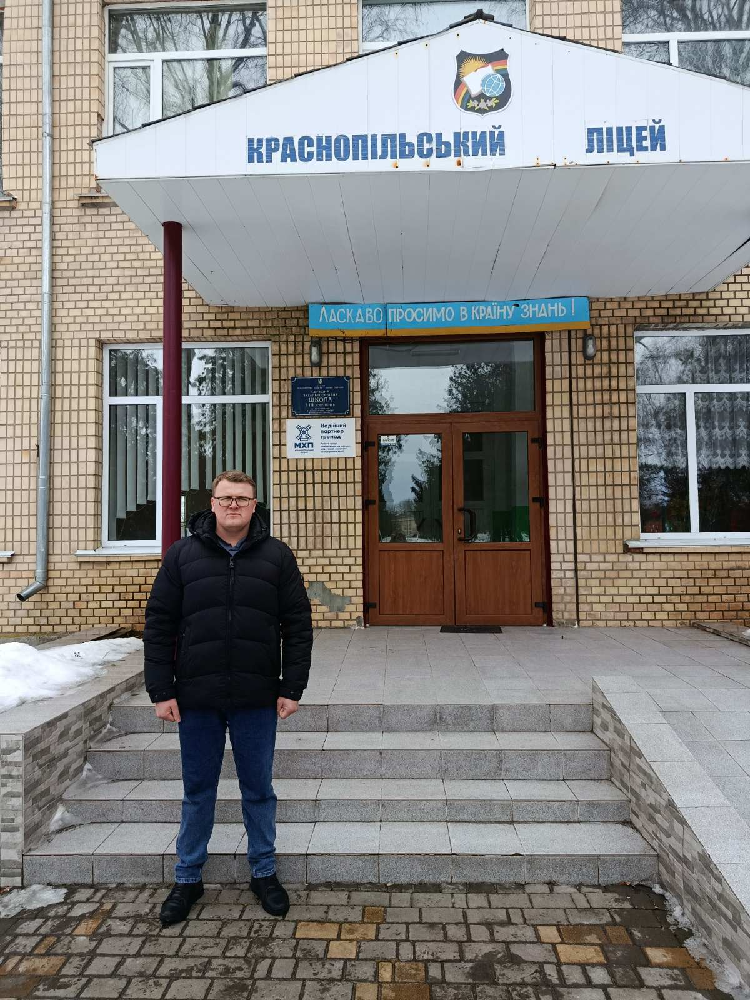
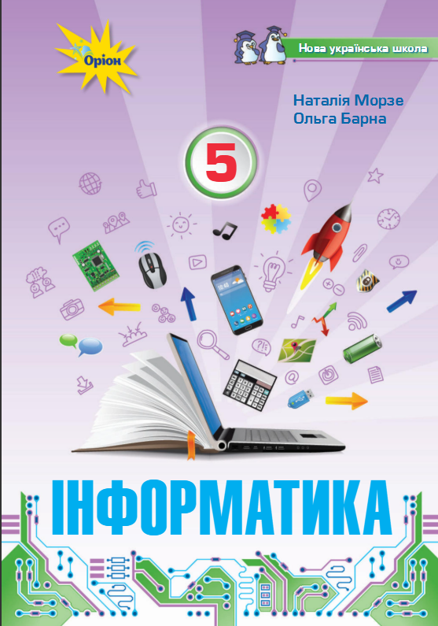
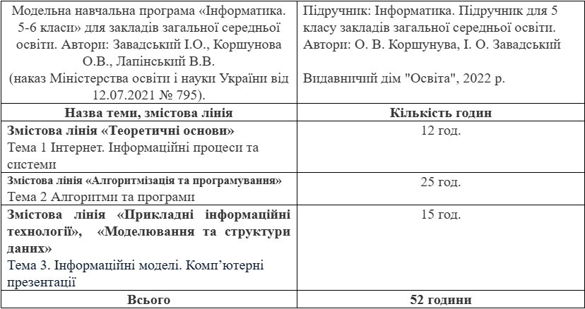

Проходження педагогічної практики
Педагогічна практика у Краснопільському ліцеї стала важливим і відповідальним етапом мого професійного становлення як майбутнього вчителя інформатики. Вона дала змогу не лише закріпити теоретичні знання, отримані під час навчання, а й застосувати їх у реальних умовах освітнього процесу, що значно поглибило розуміння сутності педагогічної діяльності.
Під час проходження практики я ознайомився з організацією роботи закладу освіти, структурою навчального процесу, особливостями діяльності педагогічного колективу та сучасними підходами до навчання і виховання учнів. Відвідування уроків інформатики дозволило проаналізувати ефективні методи та прийоми навчання, способи подання матеріалу, організацію роботи учнів та використання інформаційно-комунікаційних технологій у навчальному процесі.
Особливо цінним для мене став досвід самостійної підготовки та проведення уроків інформатики. У процесі роботи я розробляв плани-конспекти уроків, добирав дидактичні матеріали, створював презентації та організовував практичну діяльність учнів. Під час практики я проводив уроки інформатики в 5–9 класах, використовуючи різні методи навчання та поєднуючи теоретичний матеріал із практичними завданнями, що сприяло підвищенню зацікавленості учнів та ефективності засвоєння знань.
Значна увага під час практики приділялася виховній роботі. У період практики я виконував обов’язки класного керівника 7 класу, брав участь у підготовці та проведенні виховних бесід і заходів, спрямованих на формування цифрової грамотності, культури спілкування, відповідального ставлення до навчання та безпечної поведінки в Інтернеті. Це дозволило усвідомити важливість виховної складової в діяльності вчителя та її вплив на формування особистості учнів.
Педагогічна практика сприяла розвитку моїх професійних якостей, зокрема відповідальності, організованості, комунікабельності та вміння працювати з учнівським колективом. У процесі взаємодії з учнями я навчився враховувати їхні індивідуальні особливості, рівень підготовки та інтереси, що є важливим для ефективного навчання.
Окрім цього, практика дала змогу оволодіти навичками самостійної роботи, планування навчальної діяльності, аналізу результатів власної педагогічної діяльності та прийняття обґрунтованих рішень у процесі навчання.
Отже, проходження педагогічної практики було змістовним і результативним. Воно сприяло формуванню професійних компетентностей, удосконаленню практичних умінь та підготовці до майбутньої педагогічної діяльності. Отриманий досвід став важливим кроком на шляху до становлення мене як кваліфікованого фахівця.

📌 Основні напрямки діяльності
- проведення уроків інформатики у 5–9 класах;
- розробка планів-конспектів уроків;
- створення презентацій та дидактичних матеріалів;
- організація практичних робіт для учнів;
- проведення виховних бесід та заходів;
- оцінювання навчальних досягнень учнів.
Матеріали по класам
Нормативно-методичні матеріали (5 клас)

Підручник Інформатика (Морзе) 5 клас 2022
Календарно-тематичне планування (КТП)Нормативно-методичні матеріали (6 клас)
План-конспект уроку:
Тема: Робота з графікою в середовищі текстового процесора
Переглянути конспект
📸 Фото з практики

Проведення уроку

Робота з учнями